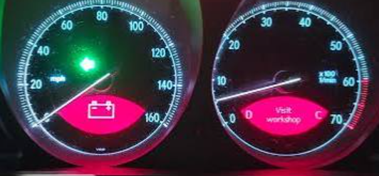

The warning
On the instrument cluster of a Mercedes-Benz SL R230, a red battery symbol appears in the speedometer, and "Visit workshop" appears in the rev counter. Together they mean the car has logged a battery fault.

This warning can have more than one cause, so if you see it, have the car's battery and charging system checked properly. This page covers one specific cause: the warning that stays on after the factory battery control module (BCM) has been replaced.
The Problem
After replacing the BCM
There are several modern dual battery charging solutions that can replace the factory battery control module in the Mercedes SL R230. However, the car no longer hears from the module it expects, so it reports the module as missing. The dashboard flashes fault codes, and the "battery fault, visit workshop" warning stays on, no matter how well the new charging solution performs.
The Solution
With SmartR230
SmartR230 is the companion to your new charging solution. It sends the signals the car expects to hear, so the fault codes and the "battery fault, visit workshop" warning are suppressed. Your charging solution looks after the batteries, and SmartR230 keeps the dash clean.
What is SmartR230?
SmartR230 is a standalone CAN-bus emulator designed specifically for the Mercedes-Benz SL R230. It mimics the faulty battery control module's CAN signatures, suppressing the BCM fault message on your instrument cluster.
Whether you're waiting for a replacement module to arrive, migrating to a modern third-party BCM, or testing your R230's electrical architecture, SmartR230 eliminates the diagnostic noise and keeps your dash functional.
Common questions
Which cars does SmartR230 fit?
It is designed specifically for the Mercedes-Benz SL R230, 2001 to 2012.
How do I fit it?
It goes beside the rear SAM behind the seats and uses a fuse tap for power, so no original wiring is cut. Our install guide has a video and step-by-step instructions.
How much is it?
£88.50 in the UK with delivery included, or $148 in the USA with delivery, customs and import fees all included. Elsewhere, email payments@smartr230.co.uk for a quote.